Sistema de Gestión Empresarial y Comercio Electrónico
Guía paso a paso de todos los módulos y formularios
Ventas · Compras · Inventario · Almacén · Finanzas · POS · Tienda en línea
Versión 2.0 · Junio 2026
Tabla de contenido
Introducción y conceptos básicos
Inicio de sesión
Acceso al sistema
Cerrar sesión
Navegación general de la pantalla
Menú lateral, barra superior, botón Crear, búsqueda y atajos
Panel principal (Dashboard)
Módulo Productos
Lista de productos
Crear un producto nuevo
Variantes, categorías y unidades de medida
Módulo Ventas
Clientes
Crear una Orden de Venta (paso a paso)
Seleccionar el cliente y registrar precios
Ciclo de vida de la orden
Emitir factura y registrar cobro
Módulo Compras
Proveedores
Crear una Orden de Compra
Módulo Inventario
Stock, bajo stock, transacciones, conteo y transferencias
Módulo Almacén (WMS)
Trabajo, olas, llegadas y ubicaciones
Módulo Finanzas
Plan de cuentas, asientos, facturas, IVA, estados financieros
Reportes y analítica
Importación de datos
Recursos Humanos
Registro de auditoría
Configuración y asistente de instalación
Punto de Venta (POS)
Tienda en línea
Glosario
1. Introducción y conceptos básicos
Bienvenido a Quberty ERP, su sistema integral para administrar todo el negocio desde un solo lugar: productos, ventas, compras, inventario, almacén, finanzas, punto de venta y tienda en línea.
¿Qué puede hacer con Quberty?
Vender a clientes (en oficina, en caja o por internet) y emitir facturas.
Comprar mercadería a proveedores y registrar su recepción.
Controlar el inventario en tiempo real, por producto, variante (talla/color) y ubicación.
Llevar la contabilidad: plan de cuentas, asientos, IVA, IT, estados financieros.
Cobrar en caja con el módulo POS y vender por la tienda en línea.
Conceptos que aparecen en todo el sistema
Término
Significado
Bs.
Bolivianos. Es la moneda con la que el sistema muestra todos los importes.
IVA 13%
Impuesto al Valor Agregado, incluido en el precio de venta.
IT 3%
Impuesto a las Transacciones, calculado sobre el neto.
NIT / CI
Número de identificación tributaria o cédula del cliente para la factura.
SKU
Código único de un producto (por ejemplo NIKE-AM270).
Variante
Versión específica de un producto, por ejemplo una talla o color.
Almacén
Depósito físico desde donde sale o entra el stock.
Sobre este manual
La interfaz del sistema combina términos en español e inglés. En esta guía, cada vez que mencionamos un botón o etiqueta de la pantalla, lo escribimos como aparece en el sistema (por ejemplo New Order) para que pueda ubicarlo fácilmente.
2. Inicio de sesión
Para usar el sistema administrativo (ERP) necesita una cuenta de usuario con su correo y contraseña.
Acceso al sistema
Abra el navegador e ingrese a la dirección del sistema (por ejemplo http://localhost:3000 o el dominio de su empresa).
En la pantalla de acceso, escriba su correo electrónico en el campo Email.
Escriba su contraseña en el campo Password.
Presione el botón de iniciar sesión. El sistema lo llevará automáticamente al Dashboard (panel principal).
Si la contraseña es incorrecta
El sistema muestra el mensaje “Invalid email or password” y permanece en la pantalla de acceso. Verifique mayúsculas y vuelva a intentar.
Cerrar sesión
Para salir de forma segura, abra el menú de su usuario (el círculo con sus iniciales en la esquina superior derecha) y elija la opción de cerrar sesión. Es recomendable hacerlo siempre al terminar, sobre todo en equipos compartidos.
3. Navegación general de la pantalla
Toda la parte administrativa comparte la misma estructura. Conocerla le permitirá moverse con rapidez por cualquier módulo.
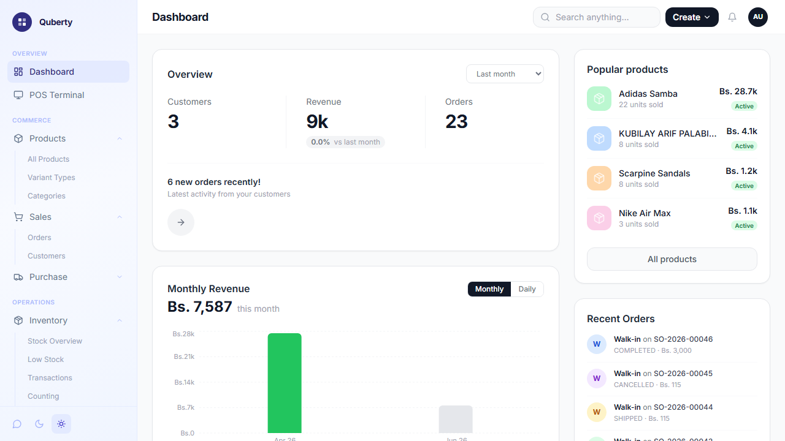
Pantalla principal: menú lateral (izquierda), barra superior y área de contenido.
Menú lateral (izquierda)
Es el índice de todos los módulos, agrupados en secciones: Overview (Dashboard y POS), Commerce (Productos, Ventas, Compras), Operations (Inventario, Almacén), Finance y Management (Reportes, Importación, RR.HH., Auditoría, Configuración).
Los grupos con una flechita (▾) se despliegan al hacer clic para mostrar sus subopciones.
La opción en la que se encuentra aparece resaltada en color índigo.
Barra superior
Elemento
Para qué sirve
Título
Muestra el nombre de la pantalla actual.
Search anything…
Búsqueda global. Permite encontrar productos, órdenes, clientes, etc.
Create ▾
Atajo para crear rápidamente: producto, orden de venta u orden de compra desde cualquier pantalla.
Iniciales (círculo)
Menú de su cuenta de usuario y cierre de sesión.
Atajos de teclado
Atajo
Acción
G luego D
Ir al Dashboard
G luego P
Ir a Productos
G luego S
Ir a Ventas
G luego F
Ir a Finanzas
Ctrl + K
Búsqueda global
Ctrl + N
Crear nuevo
Modo claro / oscuro
En la parte inferior del menú lateral encontrará los íconos de luna y sol para cambiar entre tema oscuro y claro según su preferencia.
4. Panel principal (Dashboard)
Menú: Overview › Dashboard
El Dashboard resume la salud del negocio de un vistazo. Es la primera pantalla que ve al ingresar.
Dashboard con indicadores, ingresos mensuales, productos populares y últimas órdenes.
Qué información muestra
Overview: número de clientes, ingresos del periodo y cantidad de órdenes.
Monthly Revenue: gráfico de ingresos del mes en bolivianos.
Popular products: los productos más vendidos y su recaudación.
Recent Orders: las últimas órdenes con su estado (COMPLETED, SHIPPED, CANCELLED, etc.).
Con el selector de la esquina (Last month) puede cambiar el periodo analizado.
5. Módulo Productos
Menú: Commerce › Products
Aquí se administra el catálogo: los artículos que compra, vende y mantiene en inventario.
5.1 Lista de productos
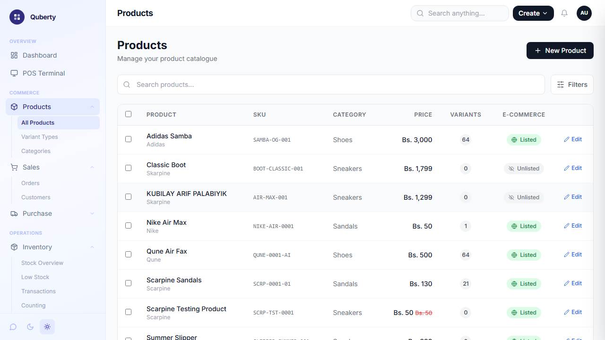
Listado de productos con su información y acciones.
La lista (All Products) muestra cada producto con su nombre, SKU, precio y estado. Desde aquí puede buscar, abrir un producto para editarlo o crear uno nuevo.
5.2 Crear un producto nuevo
Haga clic en Products › All Products y luego en el botón de nuevo producto (o use Create › New Product de la barra superior).
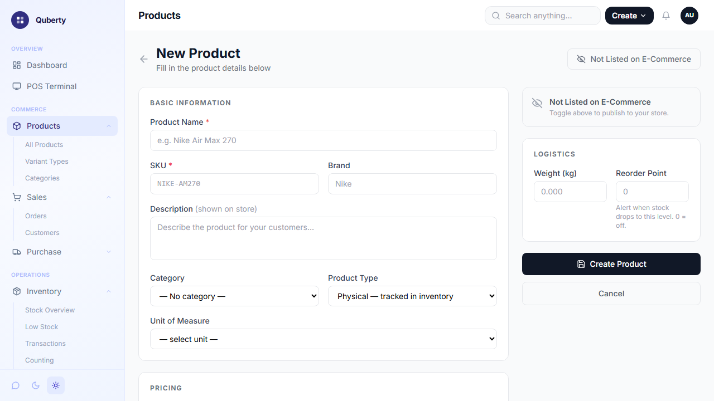
Formulario “New Product”. Los campos con asterisco (*) son obligatorios.
En Product Name escriba el nombre del producto (ej.: Nike Air Max 270). Obligatorio.
En SKU ingrese el código único del producto (ej.: NIKE-AM270). Obligatorio.
Opcionalmente complete Brand (marca) y Description (descripción que verá el cliente en la tienda).
Elija una Category (categoría) y el Product Type (normalmente Physical — tracked in inventory para artículos con stock).
Seleccione la Unit of Measure (unidad de medida, ej.: par, unidad).
En el panel derecho Logistics indique el Weight (peso) y el Reorder Point (punto de reorden: el sistema avisa cuando el stock baja a ese nivel; 0 = desactivado).
Más abajo, en la sección Pricing, ingrese el precio de costo y el precio de venta.
Si desea publicarlo en la tienda en línea, active el interruptor Not Listed on E-Commerce de la parte superior.
Pulse Create Product para guardar.
Consejo El Reorder Point alimenta el reporte de Low Stock, ayudándole a reponer a tiempo.
5.3 Tipos de variantes
Menú: Products › Variant Types
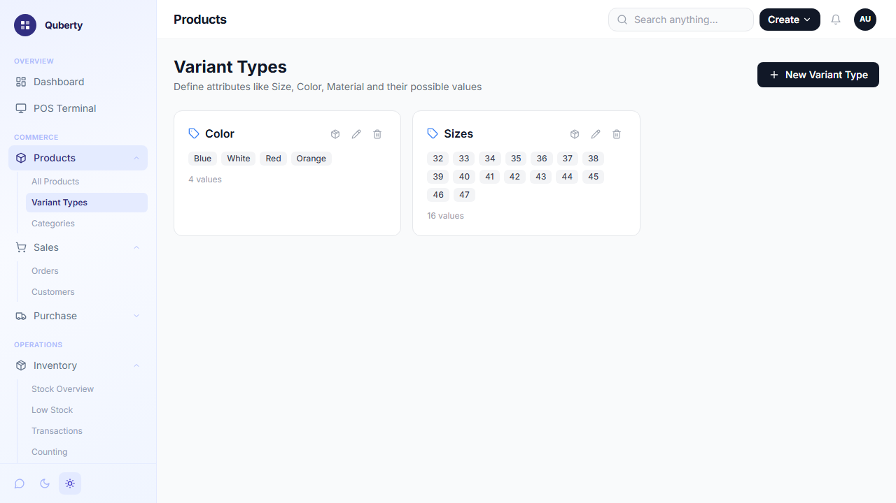
Definición de tipos de variante (por ejemplo Talla, Color).
Las variantes permiten manejar un mismo producto en distintas presentaciones (tallas, colores). Aquí define los tipos de variante y sus valores, que luego se asignan a los productos y se controlan por separado en el inventario.
5.4 Categorías
Menú: Products › Categories
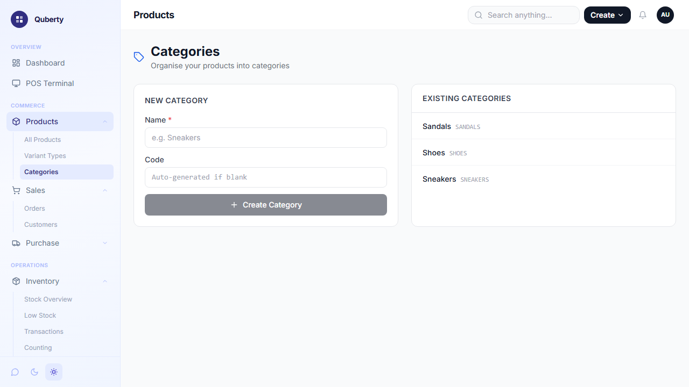
Categorías para organizar el catálogo.
Las categorías agrupan productos similares (ej.: Zapatillas, Botas). Facilitan la búsqueda y la navegación en la tienda.
5.5 Unidades de medida
Menú: Products › (Unit of Measure)
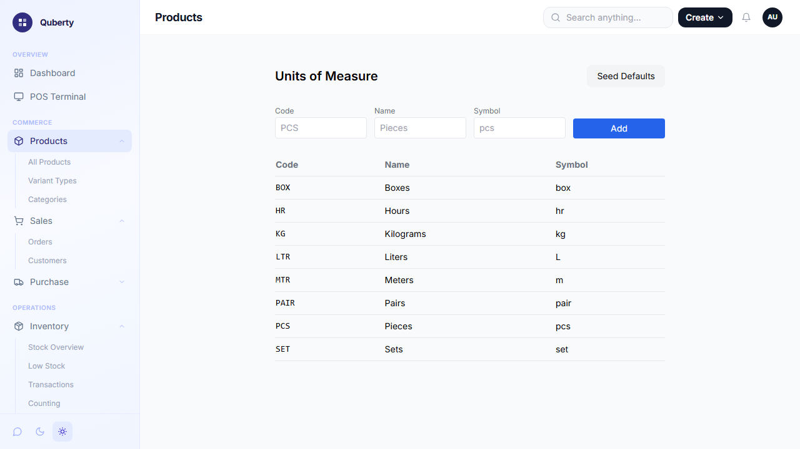
Catálogo de unidades de medida.
Define las unidades con las que se compran y venden los productos (par, unidad, caja, etc.).
6. Módulo Ventas
Menú: Commerce › Sales
El corazón del proceso comercial: registrar clientes, crear órdenes de venta, facturar, cobrar y despachar.
6.1 Clientes
Menú: Sales › Customers
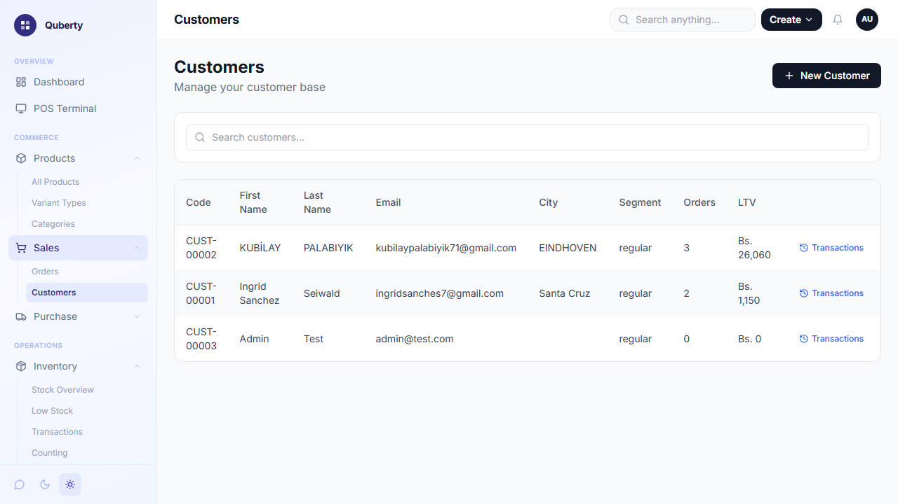
Base de clientes con su código, datos de contacto, segmento, número de órdenes y valor total (LTV).
Esta pantalla muestra todos los clientes con su Code (ej.: CUST-00002), nombre, correo, ciudad, Segment, cantidad de órdenes y LTV (valor total comprado). El enlace Transactions de cada fila abre su historial.
¿Cómo se dan de alta los clientes?
Los clientes se crean principalmente de dos maneras: (a) cuando se registran ellos mismos en la tienda en línea (ver capítulo 17), o (b) de forma masiva desde el módulo Importación de datos (capítulo 12, pestaña Customers). En la orden de venta también puede vender a un cliente ocasional sin registrarlo (opción Walk-in).
6.2 Crear una Orden de Venta — paso a paso
Menú: Sales › Orders
La Orden de Venta es el documento donde se registra qué le vende a un cliente, en qué cantidad y a qué precio.
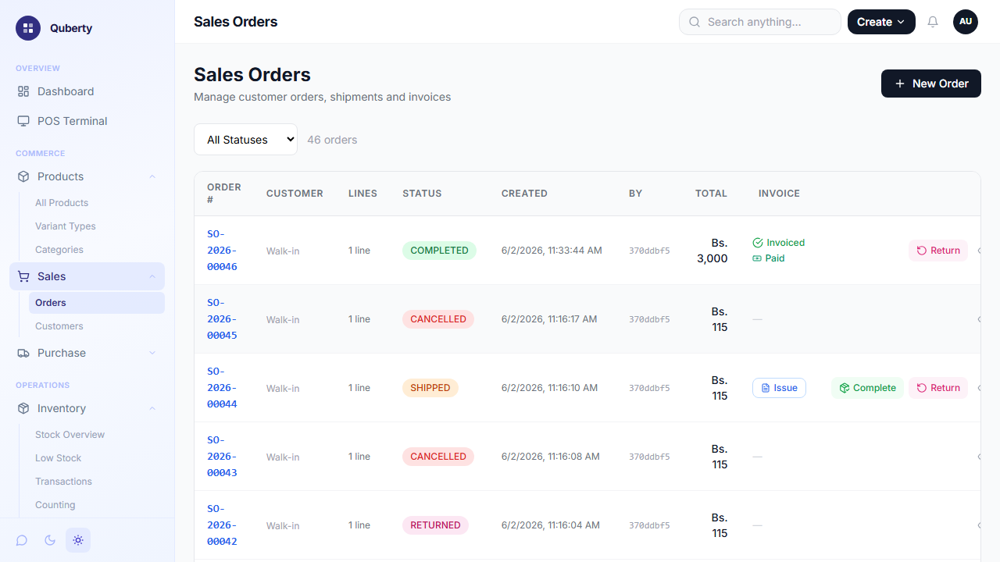
Listado de órdenes de venta. El botón “New Order” (arriba a la derecha) inicia una nueva.
En el menú abra Sales › Orders.
Haga clic en el botón New Order (arriba a la derecha). Se abrirá el formulario New Sales Order.
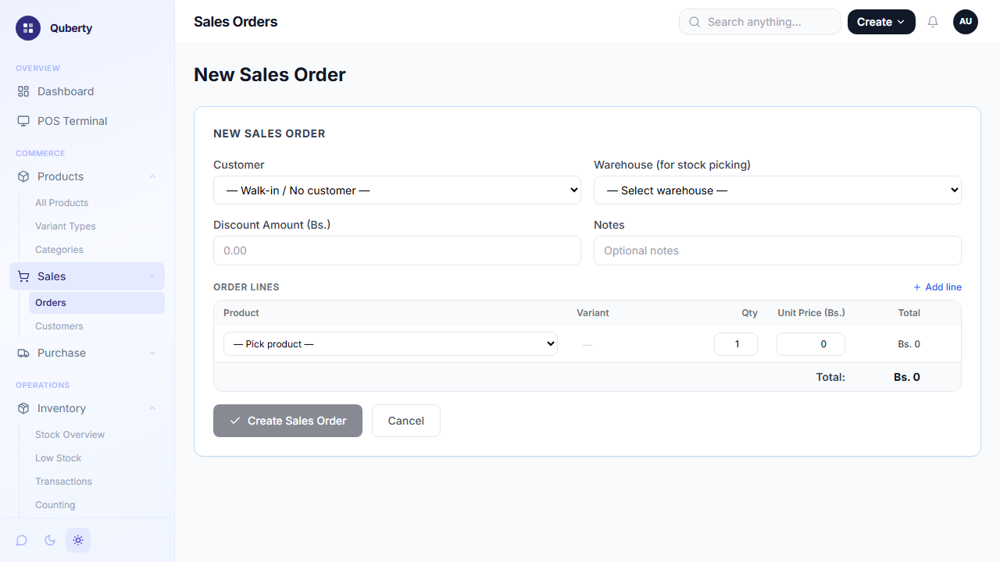
Formulario de nueva orden de venta, recién abierto.
Seleccionar la cuenta del cliente
En el campo Customer abra la lista desplegable.
Elija el cliente por su nombre y código (ej.: KUBILAY PALABIYIK (CUST-00002)).
Si es una venta a un cliente no registrado, deje la opción — Walk-in / No customer —.
Indicar el almacén
En Warehouse (for stock picking) seleccione el depósito desde el cual se descontará el stock al despachar la orden.
Agregar las líneas y el precio
En la tabla Order Lines, en la columna Product, elija el producto a vender (ej.: Adidas Samba (SAMBA-OG-001)).
Al seleccionar el producto, el Unit Price (Bs.) se completa automáticamente con el precio de venta configurado. Puede modificarlo manualmente si lo necesita.
Si el producto tiene variantes (talla/color), elíjala en la columna Variant.
Indique la cantidad en Qty. La columna Total de la línea se recalcula sola.
Para vender varios productos en la misma orden, pulse + Add line y repita.
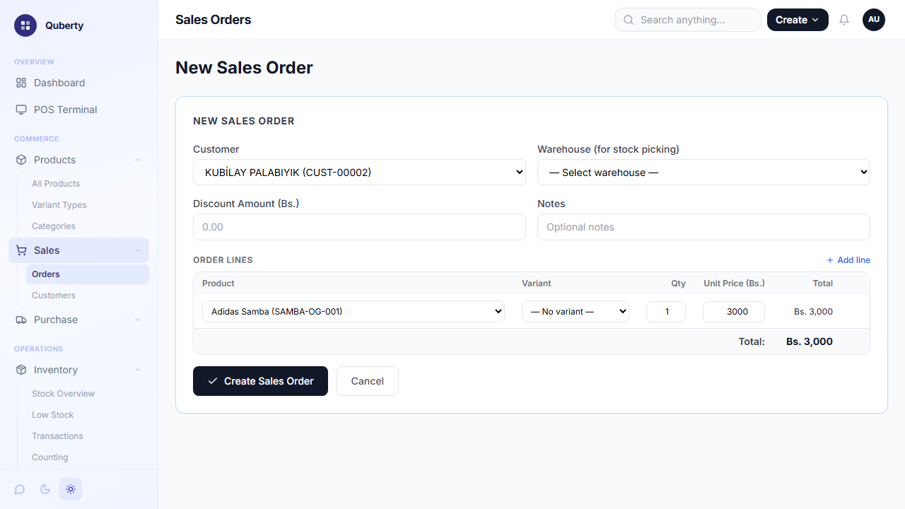
Orden con cliente seleccionado y una línea: el precio unitario (3000) se cargó solo y el total muestra Bs. 3,000.
Descuento y notas
Opcionalmente ingrese un Discount Amount (Bs.) (descuento en bolivianos sobre el total) y un texto en Notes. Al aplicar descuento, el pie de la tabla muestra Subtotal, Discount y Total.
Revise el Total al pie de la tabla.
Pulse Create Sales Order para guardar. La orden se crea en estado DRAFT (borrador).
Si desea descartar, use Cancel.
Importes Todos los precios se manejan en bolivianos (Bs.). El IVA (13%) y el IT (3%) se calculan al momento de emitir la factura.
6.3 Ciclo de vida de una orden
Una orden avanza por varios estados. En la lista de órdenes, cada fila muestra el botón de la acción disponible según su estado:
DRAFT→CONFIRMED→SHIPPED→COMPLETED
Estado
Acción / significado
DRAFT
Borrador. Puede Edit (editar) o Confirm (confirmar). Al confirmar se reserva el stock.
CONFIRMED
Confirmada. Ya se puede Ship (despachar) y emitir factura.
SHIPPED
Despachada: el stock se descontó. Pendiente de Complete (completar).
COMPLETED
Finalizada. Si corresponde, admite Return (devolución), que repone stock y genera nota de crédito.
CANCELLED
Anulada. Disponible mientras la orden está en DRAFT o CONFIRMED.
Editar Solo se puede editar una orden mientras está en DRAFT o CONFIRMED y aún no tiene factura emitida.
6.4 Emitir una factura
En la lista de órdenes, ubique una orden confirmada (o posterior) y pulse Issue en la columna Invoice.
En la ventana Fatura Oluştur / Issue invoice, ingrese el NIT / CI del cliente (opcional) y, si desea, una nota.
El sistema muestra el desglose: Subtotal neto (sin IVA), IVA 13% (incluido), IT 3% (sobre neto) y el Total.
Pulse Issue Factura. La orden quedará marcada como Invoiced.
6.5 Registrar el cobro
Una vez facturada y aún sin pagar, la orden muestra el botón Collect.
En Collect Payment indique la Payment Date (fecha de pago).
En Received Into elija la cuenta de destino: 1102 — Bancos o 1101 — Caja.
Pulse Record Payment. El sistema contabiliza el asiento automáticamente (Debe Banco/Caja, Haber Cuentas por Cobrar) y la orden queda como Paid.
7. Módulo Compras
Menú: Commerce › Purchase
Gestiona las compras a proveedores: desde el registro del proveedor hasta la recepción de la mercadería.
7.1 Proveedores
Menú: Purchase › Suppliers
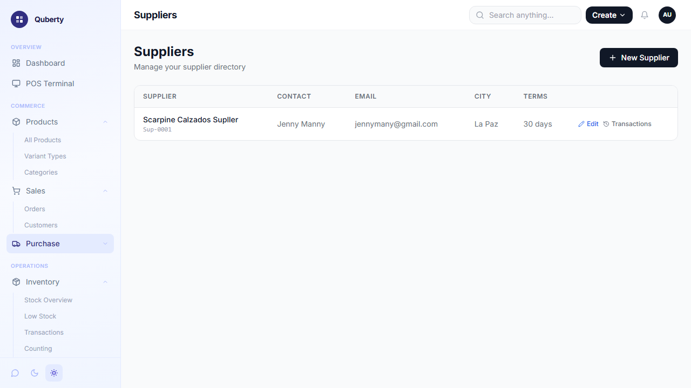
Listado de proveedores.
Aquí se registran y administran los proveedores a quienes compra mercadería: razón social, datos de contacto e información de pago.
7.2 Crear una Orden de Compra — paso a paso
Menú: Purchase › Purchase Orders
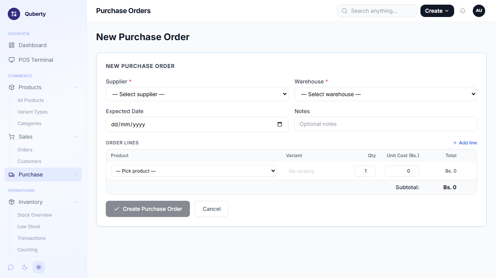
Formulario “New Purchase Order”. Proveedor y almacén son obligatorios (*).
Abra Purchase › Purchase Orders y pulse New PO.
En Supplier seleccione el proveedor. Obligatorio.
En Warehouse indique el almacén donde se recibirá la mercadería. Obligatorio.
Opcionalmente fije la Expected Date (fecha esperada de entrega) y agregue Notes.
En Order Lines elija cada Product, la cantidad (Qty) y el Unit Cost (Bs.) (costo unitario). El Total y el Subtotal se calculan solos.
Use + Add line para agregar más productos.
Pulse Create Purchase Order para guardar.
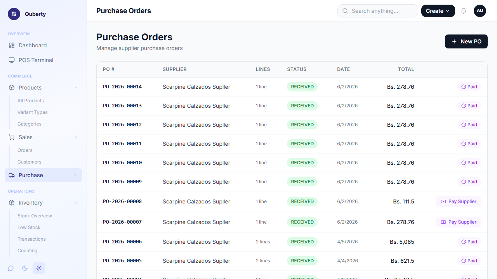
Listado de órdenes de compra y su estado.
Recepción Tras confirmar la orden de compra, la entrada de mercadería al inventario se gestiona desde el módulo Almacén › Arrivals (capítulo 9).
8. Módulo Inventario
Menú: Operations › Inventory
Permite ver y controlar las existencias en tiempo real, por producto, variante y ubicación.
8.1 Vista de stock
Menú: Inventory › Stock Overview
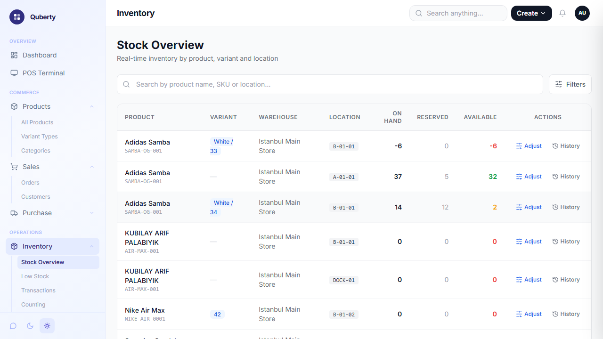
Existencias por producto, variante, almacén y ubicación.
Columna
Significado
On Hand
Cantidad física en el almacén.
Reserved
Cantidad comprometida por órdenes confirmadas.
Available
Disponible real = On Hand − Reserved.
Adjust / History
Ajustar manualmente la cantidad o ver el historial de movimientos.
Atención a los negativos Un valor en rojo (negativo) en Available indica sobreventa o falta de reposición; revise ese artículo.
8.2 Bajo stock
Menú: Inventory › Low Stock
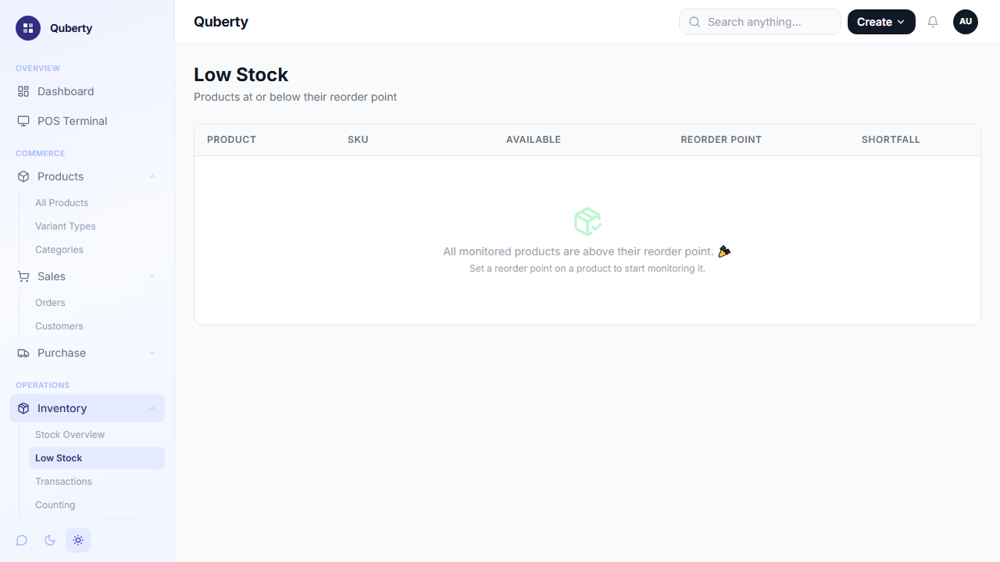
Productos que alcanzaron o bajaron de su punto de reorden.
Lista los productos cuyo stock llegó al Reorder Point. Úsela para decidir qué reponer.
8.3 Transacciones de inventario
Menú: Inventory › Transactions
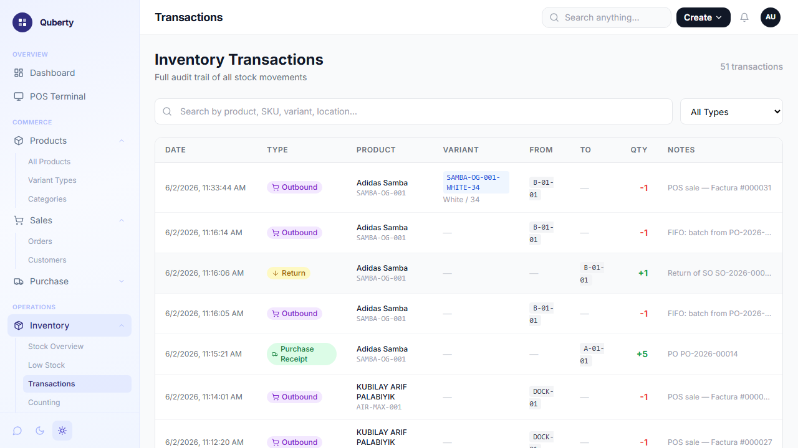
Libro de movimientos de inventario (entradas, salidas, ajustes).
Registra cada movimiento de stock con su fecha, tipo, cantidad y motivo. Es la trazabilidad completa del inventario.
8.4 Conteo de inventario
Menú: Inventory › Counting
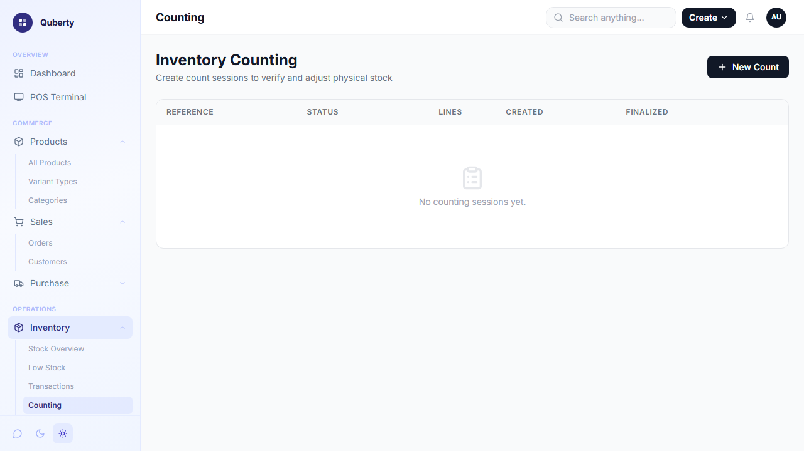
Conteos físicos de inventario.
Permite hacer recuentos físicos y comparar lo contado con lo registrado, ajustando las diferencias.
8.5 Transferencias
Menú: Inventory › Transfers
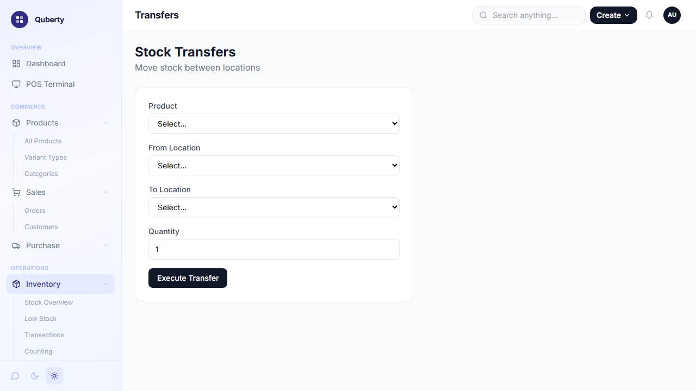
Transferencias de stock entre ubicaciones o almacenes.
Mueve mercadería de un almacén o ubicación a otro, manteniendo el inventario sincronizado.
9. Módulo Almacén (WMS)
Menú: Operations › Warehouse
Funciones de gestión de almacén inspiradas en Microsoft Dynamics 365: recepción, almacenamiento y preparación de pedidos por ubicación.
Tareas de trabajo de almacén (put-away y picking).
Lista las tareas asignadas al personal de almacén: guardar mercadería recibida o preparar pedidos para despacho.
9.2 Olas
Menú: Warehouse › Waves
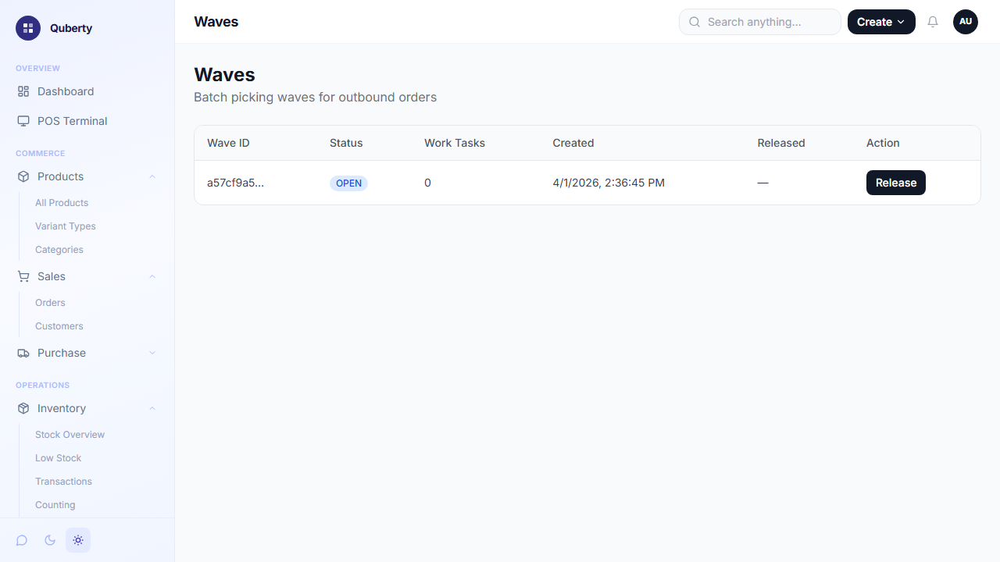
Olas de preparación de pedidos.
Agrupan varias órdenes para prepararlas juntas. Al liberar una ola se generan las tareas de picking.
9.3 Llegadas
Menú: Warehouse › Arrivals
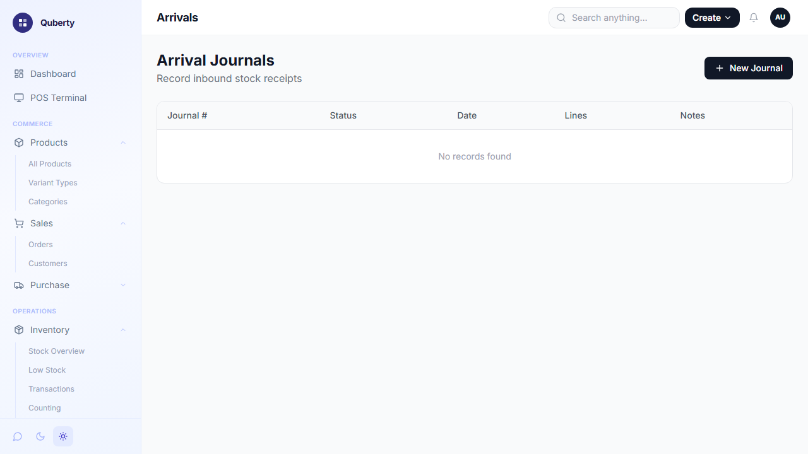
Recepción de mercadería de las órdenes de compra.
Registra la llegada física de la mercadería comprada y genera el trabajo de almacenamiento.
9.4 Ubicaciones
Menú: Warehouse › Locations
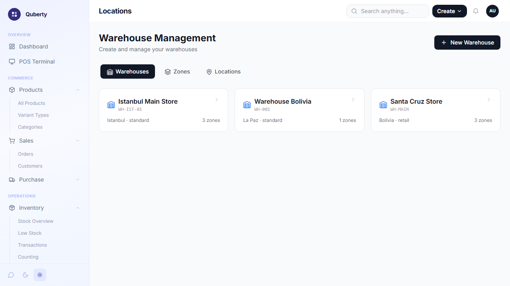
Estructura de ubicaciones del almacén.
Define la jerarquía física del almacén (sitio → almacén → zona → ubicación/bin), base para el control de stock por ubicación.
10. Módulo Finanzas
Menú: Finance
Contabilidad e impuestos: plan de cuentas, asientos, facturas, IVA e informes financieros, adaptados a la normativa boliviana.
10.1 Plan de cuentas
Menú: Finance › Chart of Accounts
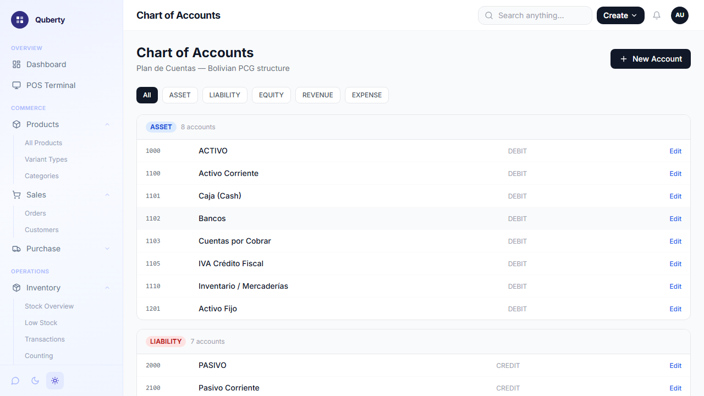
Plan de cuentas contable.
Es la lista de todas las cuentas contables (activo, pasivo, patrimonio, ingresos y gastos) con su código y nombre.
10.2 Asientos contables
Menú: Finance › Journal Entries
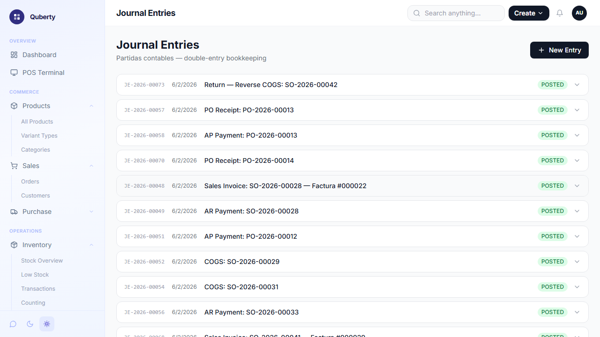
Registro de asientos contables.
Muestra todos los asientos (manuales y automáticos). Cada asiento debe estar cuadrado: total Debe = total Haber.
10.3 Facturas
Menú: Finance › Facturas
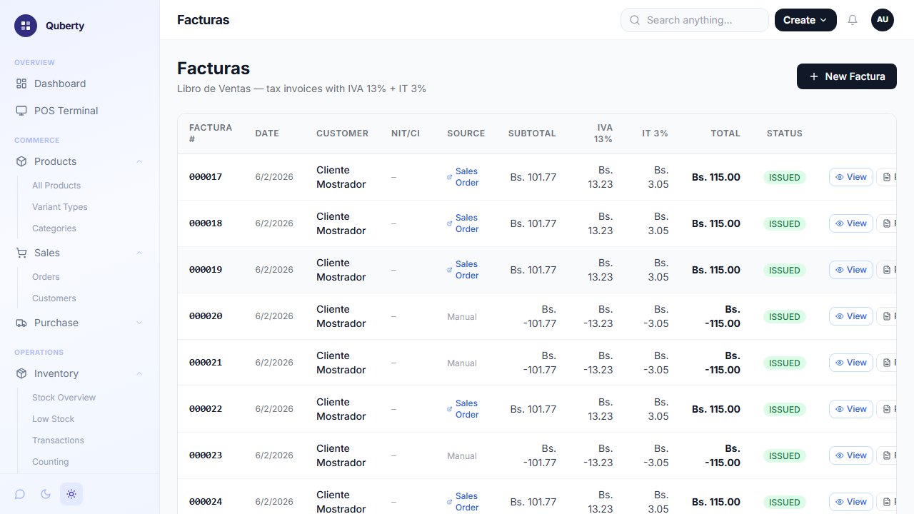
Libro de ventas con todas las facturas emitidas (IVA 13% + IT 3%).
El Libro de Ventas reúne las facturas con su número, fecha, cliente, NIT/CI, subtotal, IVA, IT, total y estado. Las facturas se generan automáticamente al facturar una orden de venta (capítulo 6.4) y también desde el POS.
10.4 Reporte de IVA
Menú: Finance › IVA Report
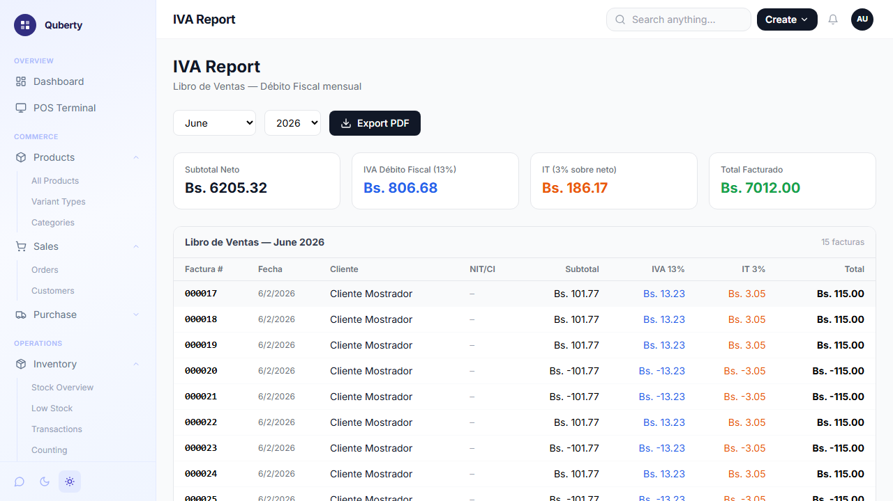
Reporte mensual de IVA con totales de subtotal neto, débito fiscal e IT.
Seleccione el mes y el año en la parte superior.
El sistema resume Subtotal Neto, IVA Débito Fiscal (13%), IT (3% sobre neto) y Total Facturado.
Pulse Export PDF para descargar el reporte para la declaración.
10.5 Estado de resultados (P&L)
Menú: Finance › Profit & Loss
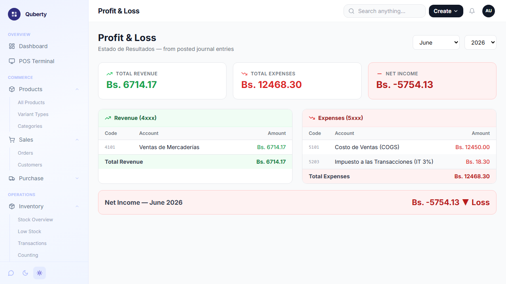
Estado de resultados: ingresos, costos y utilidad.
Muestra los ingresos, costos y gastos del periodo para conocer la utilidad o pérdida.
10.6 Balance general
Menú: Finance › Balance Sheet
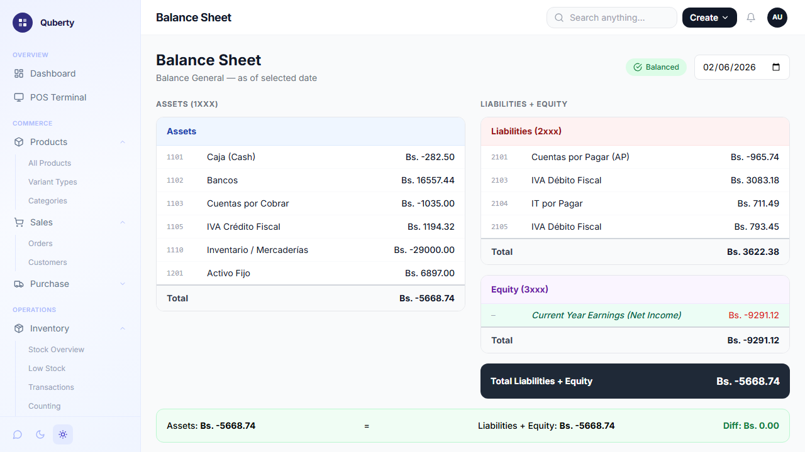
Balance general: activos, pasivos y patrimonio.
Presenta la situación financiera a una fecha: lo que la empresa tiene (activos) y lo que debe (pasivos y patrimonio).
10.7 Antigüedad de saldos
Menú: Finance › Aging Report
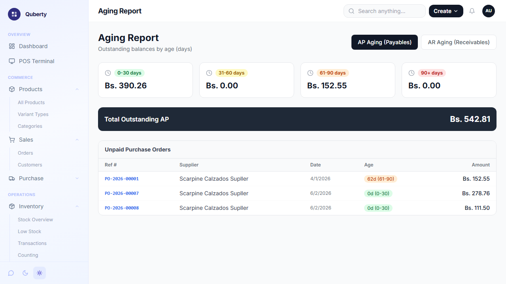
Antigüedad de las cuentas por cobrar.
Clasifica las deudas de los clientes por tramos de días vencidos, para priorizar la cobranza.
10.8 Periodos contables
Menú: Finance › Accounting Periods
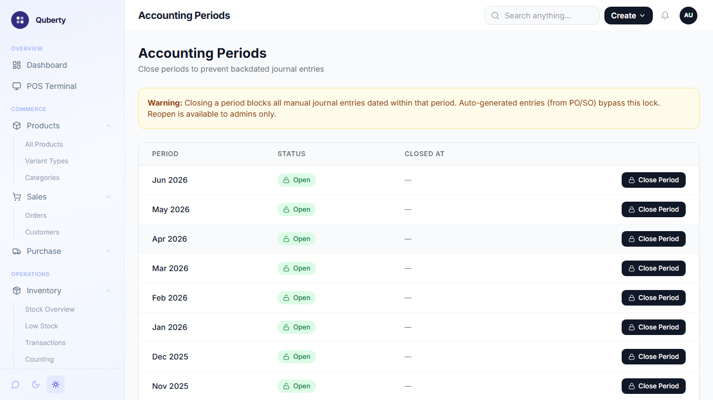
Apertura y cierre de periodos contables.
Permite abrir y cerrar los periodos (meses) para controlar en qué fechas se pueden registrar movimientos.
10.9 Conciliación bancaria
Menú: Finance › Bank Reconciliation
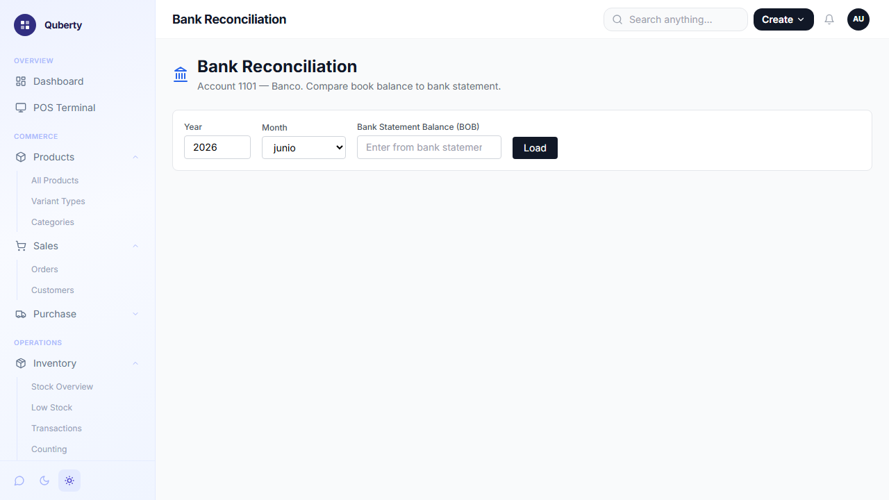
Conciliación de los movimientos del banco con la contabilidad.
Compara los movimientos del extracto bancario con los registrados en el sistema para detectar diferencias.
10.10 Plantillas de plan de cuentas
Menú: Finance › COA Templates
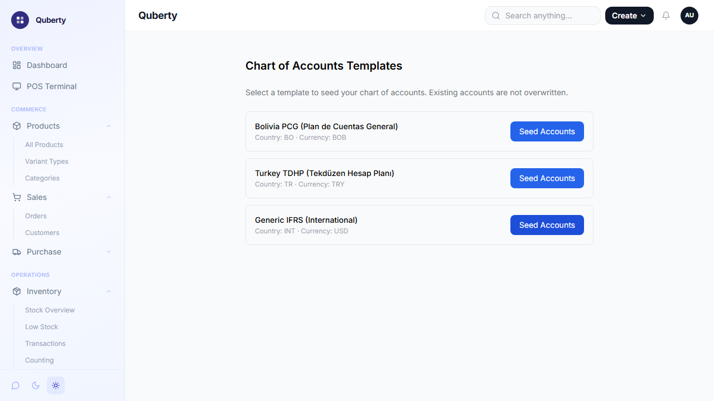
Plantillas predefinidas de plan de cuentas.
Plantillas base para inicializar rápidamente el plan de cuentas de una nueva empresa.
11. Reportes y analítica
Menú: Management › Reports
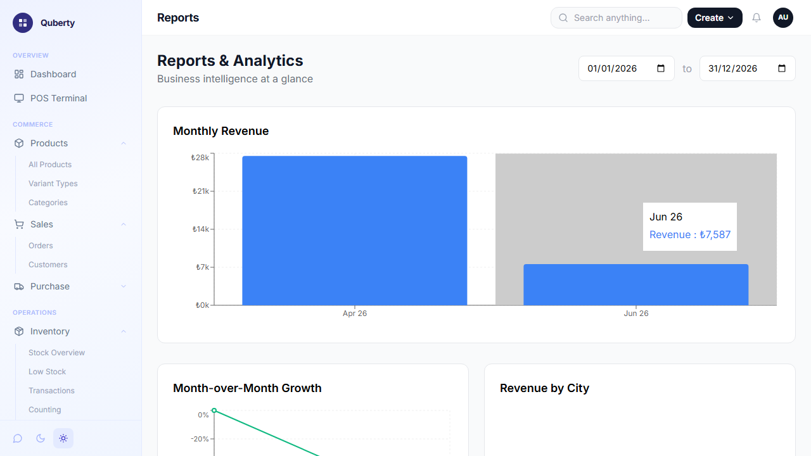
Reportes y analítica del negocio.
Inteligencia de negocio de un vistazo. Seleccione el rango de fechas (from … to …) y obtenga:
Monthly Revenue: evolución de los ingresos por mes.
Month-over-Month Growth: crecimiento respecto al mes anterior.
Revenue by City: ingresos por ciudad.
Y otros indicadores de márgenes y rotación.
12. Importación de datos
Menú: Management › Import
Permite cargar información de forma masiva desde archivos Excel o CSV. Ideal para la puesta en marcha del sistema.
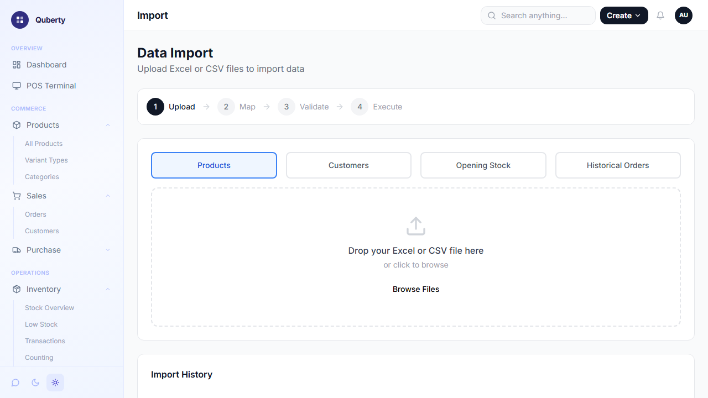
Asistente de importación en 4 pasos: Upload → Map → Validate → Execute.
Elija qué desea importar con las pestañas: Products, Customers, Opening Stock (stock inicial) o Historical Orders (órdenes históricas).
Upload: arrastre el archivo Excel/CSV a la zona indicada o pulse Browse Files para seleccionarlo.
Map: relacione cada columna de su archivo con el campo correspondiente del sistema.
Validate: el sistema revisa los datos y muestra errores o advertencias antes de cargar.
Execute: confirme para ejecutar la importación. El resultado queda en Import History.
Recomendación Importe primero Products y Customers, y solo después Opening Stock e Historical Orders, porque dependen de los anteriores.
13. Recursos Humanos
Menú: Management › HR
Administra los empleados, sus roles de acceso y la nómina.
13.1 Empleados
Menú: HR › Employees
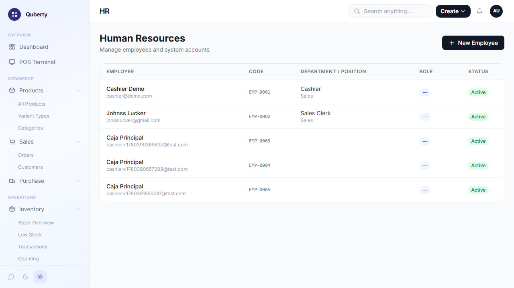
Listado de empleados y sus roles.
Registra a los empleados y les asigna un rol que define qué pueden hacer en el sistema (por ejemplo administrador o cajero).
13.2 Nómina
Menú: HR › Payroll
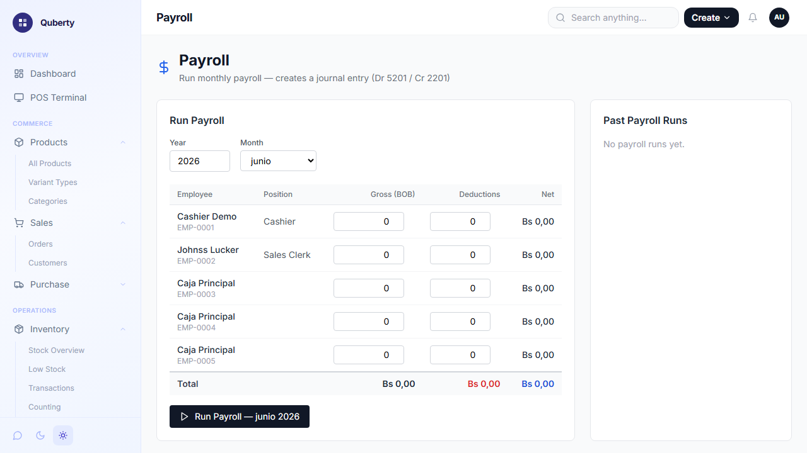
Gestión de la nómina (sueldos).
Permite calcular y registrar los pagos de sueldos del personal.
14. Registro de auditoría
Menú: Management › Audit Log
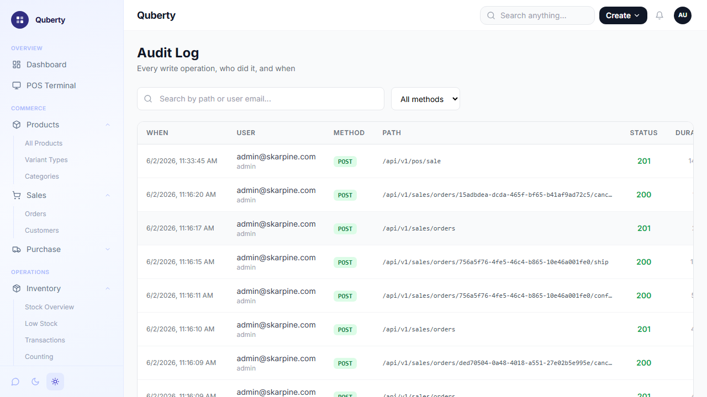
Bitácora de acciones realizadas en el sistema.
Lleva el registro de quién hizo qué y cuándo: creaciones, cambios y eliminaciones. Es clave para el control interno y la trazabilidad.
15. Configuración y asistente
15.1 Configuración
Menú: Management › Settings
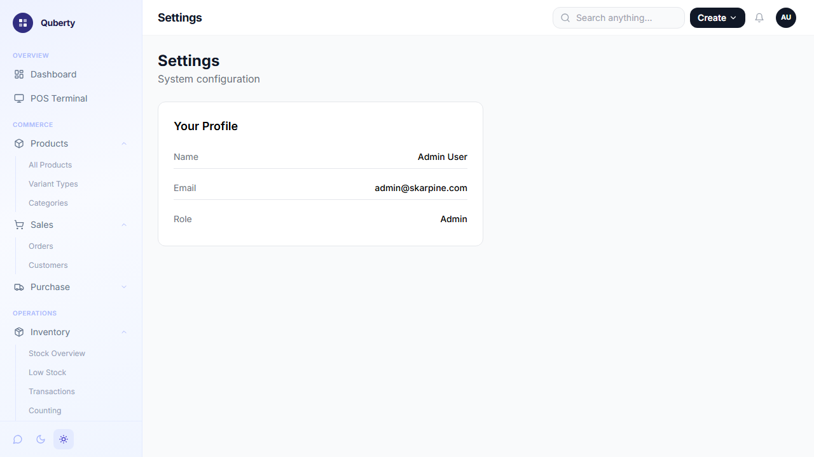
Configuración general del sistema y de la empresa.
Datos de la empresa, parámetros generales y preferencias del sistema.
15.2 Asistente de instalación
Menú: Management › Setup Wizard
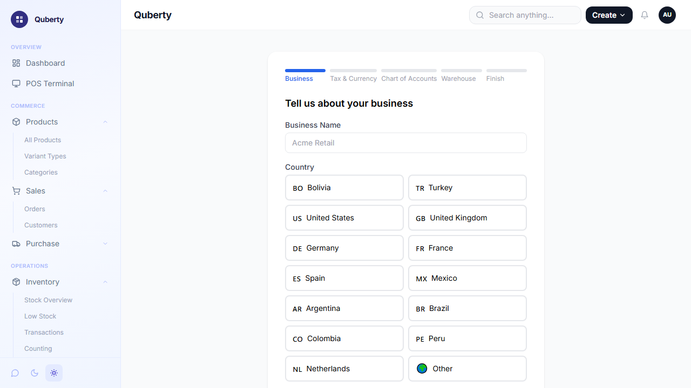
Asistente guiado de puesta en marcha.
Guía paso a paso para configurar el sistema desde cero: datos de la empresa, almacenes, plan de cuentas y catálogos iniciales. Úselo la primera vez que ponga el sistema en funcionamiento.
16. Punto de Venta (POS)
Menú: Overview › POS Terminal
Terminal de caja pensado para la venta rápida en el mostrador: buscar productos, cobrar y emitir el comprobante.
16.1 Iniciar sesión en el POS
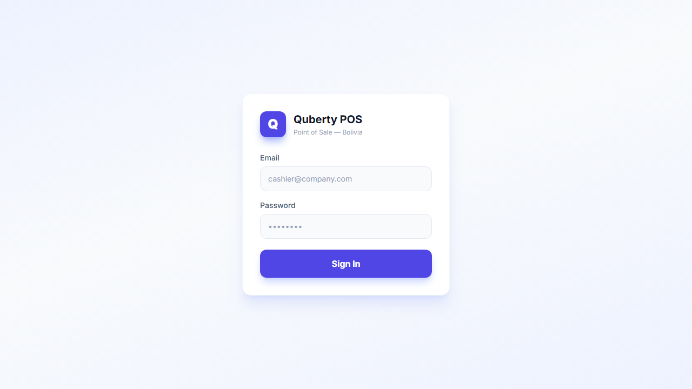
Pantalla de acceso del POS para el cajero.
Abra el POS e ingrese el correo y la contraseña del cajero.
Si la caja del día aún no está abierta, el sistema pedirá abrir caja indicando el monto inicial (Opening Float) y luego Open Register.
16.2 Realizar una venta
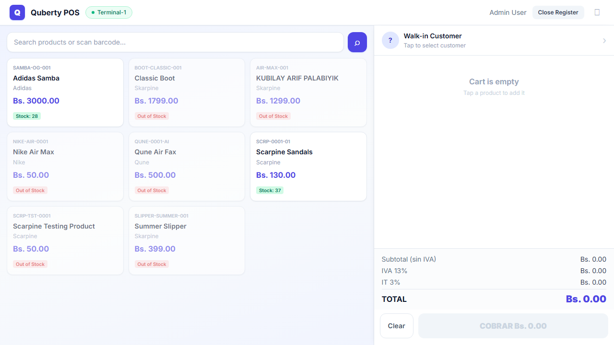
Pantalla principal del POS: catálogo a la izquierda, carrito y totales a la derecha.
Busque el producto en Search products or scan barcode… o tóquelo en la grilla. Se agrega al carrito.
(Opcional) Asigne un cliente con Walk-in Customer › Tap to select customer; de lo contrario la venta es a cliente ocasional.
El panel derecho calcula automáticamente Subtotal (sin IVA), IVA 13%, IT 3% y el TOTAL.
Pulse COBRAR para procesar el pago y generar el comprobante.
Use Clear para vaciar el carrito si necesita empezar de nuevo.
16.3 Cierre de caja (Reporte Z)
Al terminar la jornada, use Close Register para cerrar la caja. El sistema genera el Reporte Z con el resumen de ventas y el arqueo del día.
17. Tienda en línea
La tienda en línea (storefront) es la cara pública del negocio, donde los clientes compran por internet. Las ventas y el stock se sincronizan automáticamente con el ERP.
17.1 Catálogo
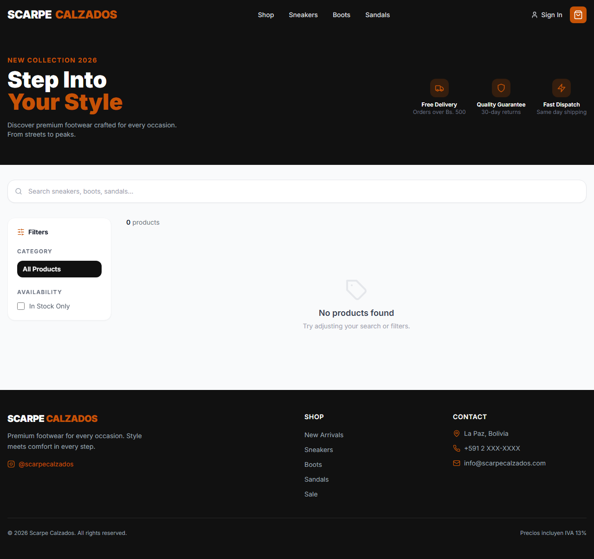
Catálogo público de productos.
Muestra los productos publicados con su foto, precio y disponibilidad. El cliente navega y añade artículos al carrito.
17.2 Registro e inicio de sesión del cliente
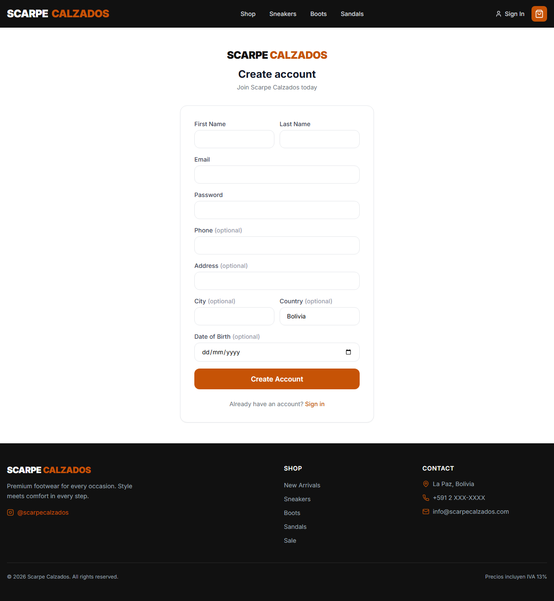
Registro de un nuevo cliente en la tienda.
El cliente crea su cuenta con sus datos. Estos clientes aparecen luego en Sales › Customers del ERP.
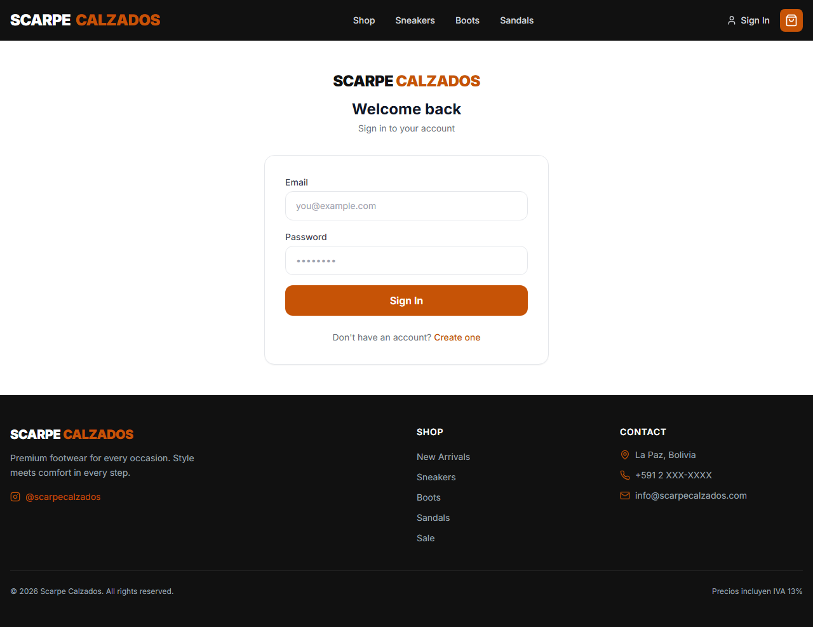
Inicio de sesión del cliente en la tienda.
17.3 Carrito y pago
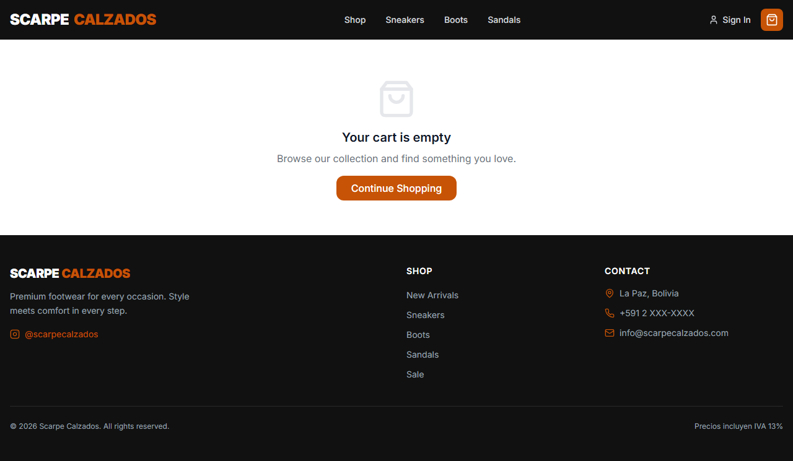
Carrito de compra del cliente.
El cliente revisa los productos y cantidades en el carrito.
Continúa al checkout para confirmar la dirección de envío y el pago.
Al confirmar, se crea una orden de venta en el ERP y se actualiza el stock automáticamente.
18. Glosario
Bs. (Boliviano)
Moneda con la que el sistema expresa todos los importes.
IVA 13%
Impuesto al Valor Agregado, incluido en el precio de venta.
IT 3%
Impuesto a las Transacciones, calculado sobre el monto neto.
NIT / CI
Número de Identificación Tributaria / Cédula de Identidad del cliente para la factura.
SKU
Código único que identifica a un producto.
Variante
Versión específica de un producto (talla, color), con stock propio.
Orden de Venta (Sales Order)
Documento que registra una venta a un cliente.
Orden de Compra (Purchase Order / PO)
Documento que registra una compra a un proveedor.
Walk-in
Cliente ocasional, no registrado, atendido en el momento.
On Hand / Reserved / Available
Stock físico / comprometido / disponible real.
Reorder Point
Nivel de stock a partir del cual el sistema sugiere reponer.
Ola (Wave)
Agrupación de órdenes para prepararlas juntas en el almacén.
Picking / Put-away
Preparar pedidos / guardar mercadería recibida.
Reporte Z
Resumen y arqueo de caja al cierre de la jornada en el POS.
LTV
Valor total histórico comprado por un cliente.
Fin del manual
Quberty ERP — Manual de Usuario Final · Versión 2.0 · Junio 2026.
Las imágenes corresponden a datos de demostración; los valores reales dependerán de la información de su empresa.